| (1) |
| 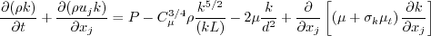 | (2) |
| 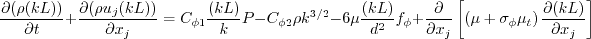 | (3) |
| 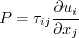 | (4) |
| (5) |
| (6) |
| 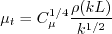 | (7) |
| 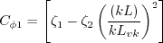 | (8) |
| 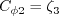 | (9) |
| 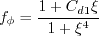 | (10) |
| 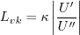 | (11) |
| 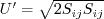 | (12) |
| 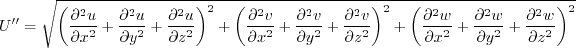 | (13) |
| 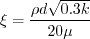 | (14) |
| (15) |
| (16) |
| 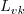 | (17) |
| 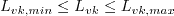 | (18) |
| 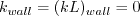 | (19) |
| 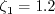 | (20) |
| 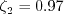 | (21) |
| 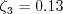 | (22) |
| (23) |
| 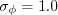 | (24) |
| (25) |
| (26) |
| (27) |
| 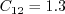 | (28) |
| 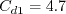 | (29) |
| 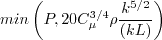 | (30) |
| 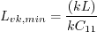 | (31) |
| 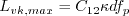 | (32) |
| 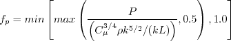 | (33) |
| 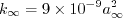 | (34) |
| 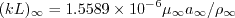 | (35) |